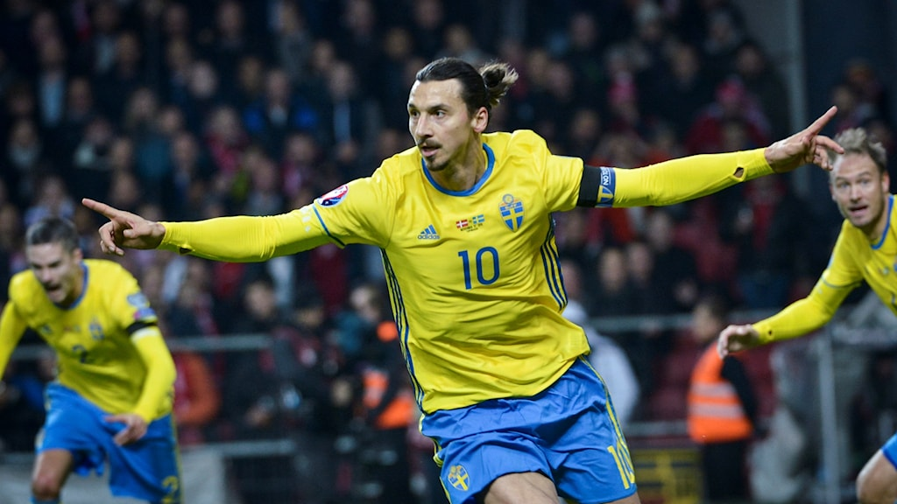

Zlatan sköt Sverige till EM
Vägen dit blev längre och krångligare än vad många hade förväntat sig. Men när det gällde som mest presterade Sverige som bäst. Efter Zlatan Ibrahimovics två mål och 2–2 mot Danmark på Parken är Blågult klart för EM i Frankrike nästa sommar. – De snackade om att jag borde gå i pension, men jag skickade hela deras land till pension, säger Zlatan till Kanal 5 som en rejäl passning till Danmark. Som väntat rivstartade Danmark och efter mindre än tio minuter var ett ledningsmål ruskigt nära. Bollen var på väg in efter hörna, men Kim Källström sträckte ut en räddande tå och styrde bollen i ribban. Just Källströms vänsterfot, och sedermera även en högerfot tillhörande en viss Zlatan Ibrahimovic, skulle komma att spela en fortsatt viktig roll. 1–0 efter hörna I den 19:e minuten nådde Källströms låga, inåtskruvade hörna fram till Ibrahimovic som med ett känsligt avslut satte 1–0 för Sverige. – Hörnan var inövad, något vi jobbat på. Vi försökte redan i första matchen, då nådde den inte fram men nu nådde den fram, säger Zlatan till SVT Sport. Och firma Källström-Ibrahimovic var fortsatt företagsam i första halvlek. Zlatan var nära att utöka ledningen efter framspelning från Kim, men Kasper Schmeichel räddade. I andra halvlek hade Danmark fortsatt ett stort bollinnehav, men det svenska försvarsspelet var samlat. Danskarna pressade på, Sverige sjönk djupare och djupare och kvitteringen var inte långt borta när Christian Eriksens avslut från nära håll räddades av både Sebastian Larsson och Andreas Isaksson. Mäktig frispark avgjorde Men med kvarten kvar klev han fram igen. Landslagets kapten och Sveriges bästa fotbollsspelare. Med en mäktig frispark – hård, skruvad och välplacerad – satte Zlatan Ibrahimovic 2–0 och sänkte Danmark. – Det går inte att beskriva, vi var uträknade, det var så mycket skitsnack. Nu är jag är glad för allihop, för hela landet. Nu njuter vi, säger Zlatan till SVT Sport efter matchen. Att Yussuf Poulsen reducerade tio minuter före slutet och Jannik Vestergaard kvitterade på övertid hjälpte föga. Sverige vann dubbelmötet med totalt 4–3 och är därmed klart för EM i Frankrike nästa sommar. – Vi var som bäst i playoff. Så här bra har vi inte spelat under hela kvalet. Det är så jävla skönt, säger Zlatan till kanal 5. – Det här betyder allting, de bästa spelarna ska tillhöra de största turneringarna. Jag missade VM men jag får chansen att spela EM, säger han till SVT Sport.